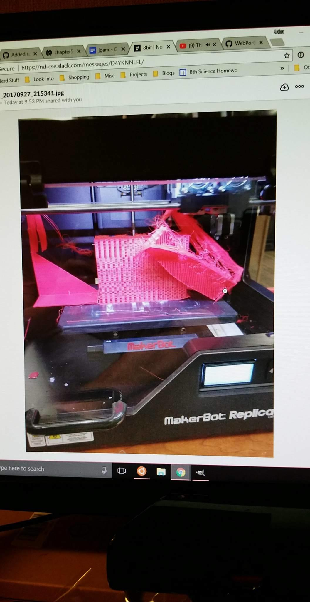

This semester has definitely been my busiest. I know there are a few projects that I started and haven’t had any updates on for a while now, so I figured I’d make a general update post.
Projects on Haitus
That GameCube Adapter Thing
I gave my old roommate money to get it 3D printed. He put in a request to the powers that be. Then this happened.

I mean, I guess it vaguely resembles the model…
Anyway, my old roommate told them to cancel it, and I never bothered to try again.
The IBM Keyboard
I still have it. It still works. But my off-the-shelf PS/2->USB adapter still doesn’t work. I want to get around to this eventually - it’s such a joy to type on.
The AI / Robot Builder Game
This semester I’ve been taking compilers. In doing so, I learned a lot about language design, and at the moment I am writing a typechecker that produces wonderful error messages. I would like to apply that knowledge to the AI game language, but I should finish my compilers homework first.
As for the robot building aspect of it, I’ve been putting that off for a while now. Maybe over Christmas break I will get some work on it done.
What have I been doing
This semester I am only in three classes: NLP, compilers, and algorithms. Each of these classes love to give me 30+ hour homeworks. That being said, I absolutely love compilers and NLP, and the homework assignments for those classes have been among my favorite of any class I’ve ever taken.
NLP also has a final project. For my final project, I want to try and make the internet a bit safer for those who might not know any better. To do this, I am working on language models for detecting phishing and predatory text, and a Google Chrome (I may switch to / also do a Firefox version) plugin to warn the user when it detects potentially dangerous events. Once this is done I will definitely post the source, my training data, and do a full write up of it. My current datasets include the PAN 2012 dataset of author identification, as well as a few hundred phising emails and a few thousand safe emails. I need a lot more data, so I’m currently searching some more. I plan on using keras, trained locally on Ozai’s GPU, and have the browser use keras.js to make predictions on text extracted from the page. I’m hoping it works out well, and I’m excited about the project.
I’ve also been working with Prof. Thain on basekernel. Together with his compiler’s course, I have learned a ton about operating systems, programming languages, C programming, and even software development. My compiler’s coursework has led to many “Ohhh, that’s why X programming language does that” moments, and my work on basekernel has led to similar “Oh, that’s why UNIX does it this way” moments as well as many many thoughts of “it never occurred to me that a lot has to happen for this simple operation to work.” Anyway, here’s a slightly outdated video showing that with weeks worth of effort, you too can have a screensaver from the 90s:
Finally, I’ve been secretarying the Linux Users Group. During the summer a graduating senior took the VPS the club blog was running on with him, and I’ve been working to rebuild it. The site is now set up with GitHub pages and hugo, and it builds automatically on Travis CI. Building on Travis isn’t as fast as the method I use, but a 5 minute deploy time isn’t so bad. Anyway, I’d love for anyone at all to contribute, so here.